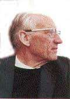

par Bernard Dupuy 17 avril 2012 [Il m'a paru utile de mettre en ligne, près de quarante ans après sa rédaction cet hommage au P. Dabosville, rédigé par le P. Bernard Dupuy. L'un et l'autre ont été des chevilles ouvrières et des théologiens marquants du dialogue judéo- chrétien. Le texte qui suit est d'une rare richesse et d'un grand courage. Il n'a pas pris une ride et devrait être connu de tous ceux et celles qui oeuvrent à la théologie du vis-a-vis entre chrétiens et juifs. D'où la diffusion publique que j'en fais ici. (Menahem Macina)] Extrait [1] de: Foi et culture dans l'Église aujourd'hui, Mélanges en l'honneur de Pierre Dabosville [1907-1976], Fayard-Mame, Paris, 1979 [Préface par Pierre Emmanuel et postface par Etienne Borne. Contributions de M.L. Achard, E. Baas, J. Ball, J. Dujardin, Y. Dumont, B. Dupuy, G. Friedmann, J. Gagey, A. Latreille, S. Lefèvre, J. Madaule, P. Marthelot, M. Meslin, V. Rivier. Chronologie et bibliographie établie par Monique LAVERGNAT. Illustrations hors texte. Broché 560 Pages], p. 183 à 192.

« En la personne du Père Dabosville, me dit un jour un ami juif, Alexandre Derczansky, un renouveau absolu passait ».
Ces termes résument à mes yeux en une formule sa haute figure. Il vivait tendu vers l'avant. Le rayonnement et le respect dont il était universellement entouré provenaient, certes, de ses qualités éminentes: son réalisme, son attention aux événements, son sens étonnant des personnes. Mais on percevait plus encore chez lui cette sagesse dépourvue de toute affectation comme de tout dogmatisme, qu'ont reconnue tous ceux qui ont travaillé à ses côtés à la Paroisse Universitaire, à [la revue] Esprit, au C.C.I.F., au Collège Saint-Martin de Pontoise, à l'Amitié judéo- chrétienne, au Comité épiscopal pour les relations avec le judaïsme. Le Grand Rabbin de France, dans un ultime hommage cité à ses obsèques par le Père Dujardin, a pu le qualifier du titre de « juste des Nations ». Il fut l'un de ces sages en lesquels nous nous fions d'instinct et dans la compagnie desquels nous avons le sentiment d'être moins étrangers à notre temps. Tout au long de sa vie, le Père Dabosville n'avait cessé de méditer sur la crise de l'humanisme contemporain et l'avenir de la culture. Il était pourtant loin de minimiser l'importance des discussions théologiques, mais sa réflexion sur le christianisme portait beaucoup moins sur les questions dites spéculatives et théologiques que sur son climat moral. Il était méfiant envers une époque qui, même en ce domaine, cède au prestige des idées, voire au culte de la vedette. S'il faut citer le nom d'un théologien pour lequel il avait une prédilection, je mentionnerai celui de Jacques Maritain. Cette affinité qu'il éprouva pour un penseur qui n'a certes pas manqué de génie spéculatif s'explique sans doute par le fait que, chez Maritain également, le sens éthique ne cède jamais devant le jeu et le pouvoir du concept. La vie de l'esprit ne vient pas se couler dans des schèmes préétablis. Une philosophie rivée à ses concepts s'installe dans un discours répétitif et engendre le scepticisme. Comme Newman avant lui, le Père Dabosville s'est de lui-même tenu à une certaine distance des courants théologiques les plus en vue, à distance de cet hégélianisme diffus qui dissimule la situation concrète de l'homme, à distance aussi des eschatologies ou des utopies qui s'adressent à un être idéal ou chimérique plus qu'à l'homme qui est et qui advient devant nous ou à côté de nous. Le Père Dabosville fut un maître entouré de nombreux disciples sans jamais créer d'école. Il s'inscrit dans la ligne de ces grands Oratoriens auxquels, par vocation, il avait voulu appartenir. S'il est vrai, comme on le répète, que chaque époque peut être résumée par une idée simple et que les temps modernes sont marqués par la conscience de l'Histoire, il aura été, à coup sûr, de son temps. Il scrutait sans cesse les courants encore obscurs de l'histoire contemporaine. Peut-être la situation à part de ce grand classique dans l'Église de ce [XXe] siècle vient-elle de ce qu'en réalité il la devançait, tout en jaugeant la présomption avec laquelle tant de clercs se déclarent si facilement d'avant-garde. Il avait appris cette dure discipline qui consiste à se maintenir en face du réel sans céder à la propension de jouer au prophète. Il n'avait pas ce préjugé que tout ce que charrie l'histoire est indice de progrès, ni que l'esprit souffle n'importe où. Mais il avait la conviction durement acquise que le sens que nous avons de l'histoire nous permet de nous situer dans le temps et nous dicte nos responsabilités.
Au cours de ses dernières années, le Père Dabosville n'a cessé de dire que la rencontre des Juifs avait été un événement décisif de sa vie.
Il suffit d'évoquer l'effroyable sort qui fut réservé au Peuple juif, en ces années qui coïncidèrent avec celles de sa jeunesse et de son âge mûr pour deviner qu'il n'ait pu y demeurer étranger. Il avait perçu le mal profond du nazisme dès l'annonce des premières mesures frappant les juifs en Allemagne. Les atteintes portées à l'existence physique et morale du Peuple juif éveillèrent chez lui – fait, hélas! trop rare à l'époque – une conscience très vive de la responsabilité des chrétiens face à l'antisémitisme, qui s'étalait au grand jour alors également en France.
Plus les événements devinrent alarmants, plus il éprouva l'obligation d'en témoigner. Il considérait le silence en ce domaine non seulement comme le signe d'une défaillance morale, mais comme une véritable apostasie de la foi chrétienne, comme une déshérence et un abandon d'identité. A ses yeux, la conscience chrétienne ne pouvait, comme elle se contentait de le faire, proclamer que le nazisme était l'expression d'un nationalisme athée et que l'antisémitisme est incompatible avec le christianisme. Des responsabilités historiques étaient en cause. Comment ignorer en effet que le processus qui a conduit au génocide fut engendré en cette région du monde qui avait été jadis le cœur de la chrétienté et où a voulu se faire entendre il y a quatre siècles la voix du pur évangile? Comment oublier le sort qui, au moyen âge, puis à l'époque des Lumières, fut fait aux Juifs dans la cité, les contraignant à des tâches qui furent précisément la source des accusations que la propagande nazie a élevées contre eux? On ne peut qu'être frappé de stupeur en constatant l'indifférence et l'insouciance dont firent preuve à cette époque tant de chrétiens devant le sort d'un Peuple, auquel pourtant leurs Ecritures auraient dû les rendre attentifs. Maintenant que la catastrophe s'est produite l'Église ne saurait échapper à cette voix du Sinaï qui fut étouffée dans les chambres à gaz et qui, du silence qui plane sur Auschwitz, l'interpelle. Bien plus profondément que les révolutions, bien autrement et plus radicalement que le sécularisme des temps modernes, c'est la Shoah qui brise la sérénité séculaire de l'Église. Elle la renvoie à la question de son origine. « L'immense clameur qui monte des camps de concentration », écrivait Jacques Maritain en 1938, dès l'annonce des premières arrestations collectives de Juifs, « n'est pas perceptible à nos oreilles, mais elle pénètre dans les fibres cachées de la vie du monde et son invisible vibration les déchire. » (Texte cité par P. Dabosville dans Information Juive, décembre 1975).
Pour le Père Dabosville, la méconnaissance du juif, qui n'a jamais été aussi profonde qu'à notre époque, n'a pu naître que d'une très antique ambivalence du chrétien à son égard. Certes, l'antisémitisme n'est pas chrétien. Il est né du ressentiment éprouvé par d'anciens chrétiens qui, dans une époque post-chrétienne, ont détourné leur mépris pour la religion-fille vers la religion-mère, plus vulnérable. Certes, il est vrai aussi que, de toutes les institutions humaines, l'Elise est celle qui, pendant la guerre a sauvé le plus de juifs. Mais il reste que la parole de l'Église à cette époque ne fut pas adaptée à ce qui était en jeu et le silence des instances officielles des Églises a permis la mise en œuvre de la « solution finale ». En dépit de la confession de foi protestante de Barmen [2], en dépit d'une prise de position nette du pape Pie XI et de celle de quelques évêques allemands, la protestation chrétienne, après les lois de Nuremberg et la Nuit de cristal, est restée faible, inefficace, et de pure forme. L'Église a laissé promulguer la discrimination juridique sous la forme du statut des juifs [3].
Elle n'a réagi vraiment qu'au moment de la persécution physique. Le cas est révélateur de cet évêque, qui en 1939, protestant dans une lettre pastorale contre la désignation du Christ comme « aryen » dans des publications officielles, croyait bon de souligner que Jésus avait été néanmoins « différent des juifs de son époque ». Les mêmes causes peuvent, demain, produire les mêmes effets. Y a-t-il eu un glissement de l'antijudaïsme théologique, qui prétendait maintenir une attitude de respect à l'égard des juifs, à l'antisémitisme de l'époque des Lumières, tissé de mépris? Quel rapport y a-t-il eu entre l'exclusion des juifs de la chrétienté et la situation qui leur est faite par l'Etat moderne? Même si l'on refuse ici d'établir des relations de cause à effet, force est de reconnaître, disait le Père Dabosville, que le rejet du juif « s'est développé dans le champ libre créé par la carence de la réflexion chrétienne sur l'existence juive ». En face du juif, le regard chrétien est resté affecté d'une étrange myopie. On pourrait croire, notait-il encore, non sans amertume, que le chrétien reste absent, et presque sans lumières propres, en face de ce domaine du réel qui est occupé par le juif: Auschwitz, aussi bien que la résurrection de l'Etat d'Israël, disait-il, « lui coupent le souffle ». Le passage du jugement négatif à la compréhension positive ne s'opère pas. La différence juive irrite, en ce qu'elle a d'irréductible. Il est frappant de voir comment certains chrétiens, marqués par des idéologies qui peuvent être soit de droite soit de gauche, peuvent se hâter d'accabler Israël de jugements pseudo-théologiques, alors qu'ils font preuve de coupables silences et d'étonnants consentements dans d'autres cas.
« Israël », disent-ils, « ne peut se défaire de "conceptions sacrales" de l'histoire. Il reste "lié à une lecture dépassée de la Bible". Il se fourvoie dans "un activisme temporel", son messianisme est un "détournement d'eschatologie". Certains publicistes, qui ont fini par obtenir l'oreille de hautes assemblées, ont osé qualifier le Peuple Juif de peuple "raciste" et, par goût du sacrilège, l'Etat d'Israël d'"Etat nazi". »
Ainsi le cercle est clos et l'histoire prête à recommencer. Bref, Israël reste objet de soupçon. Il est mis à l'écart. Si c'est le destin de l'histoire de se répéter, les chrétiens sauront-ils enfin faire entendre une voix différente?
« Je crois que l'avenir de l'humanité, confiait le Père Dabosville à un ami, dépend et de celui du Judaïsme et de la culture véhiculée par le Peuple Juif à travers le monde. Je pense aussi que le christianisme n'a pas grand-chose à espérer de l'avenir s'il ne se trouve un jour capable, avec ou sans les Juifs, mais quelle chance inouïe si c'est avec eux, d'assumer l'héritage juif qu'il a rejeté, défigurant ainsi ses origines". (Lettre du 9. 9. 1975 à Roger Errera).
Devrait-on penser que le Peuple juif a dû payer si chèrement le prix de cette conversion du regard chrétien? À quelle profondeur de la vocation d'Israël faudra-t- il donc revenir pour que nous sachions le regarder tel qu'il est et tel qu'il se comprend lui-même? Quelle oreille avons-nous perdue et devons-nous retrouver pour pouvoir entendre de nouveau le timbre de voix de ce Peuple en prière, lui qui, dans chacun de ses offices, écoute l'appel de l'Eternel, lui qui prononça, jusque dans les fours crématoires, le « Shema Israël »? Fallait-il donc qu'il reçoive au visage la caricature de son nom éternel pour pouvoir porter sereinement aujourd'hui, en face de nous, son identité? Comme l'avait remarqué le cardinal Bea au moment de Vatican II, l'affirmation du lien entre l'Église et Israël, qui a été exprimée dans les textes du concile, a comme deux pôles, l'un procédant d'une réflexion sur le sort fait aux juifs en notre temps, l'autre venant d'une réflexion interne de l'Église sur elle-même. Scrutant les signes des temps parce qu'elle se comprend maintenant plus nettement comme située « entre les temps » (Karl Barth), l'Église chrétienne « se ressouvient du lien qui l'unit au Peuple Juif » (Nostra Aetate, n° 4). Elle se remémore son origine, inscrite avec celle d'Israël dans l'élection d'Abraham. Commentant cette proposition inaugurale de la déclaration Nostra Aetate, n° 4, qui en dit peut-être à elle seule plus long que tout ce que le concile Vatican II a publié par ailleurs, le Père Dabosville écrivit:
À la vérité, il aura fallu vingt siècles à l'Église pour concevoir que sa catholicité n'affectait ni le temps ni l'espace. Elle éprouve aujourd'hui les limites de la mission. Elle se heurte, comme à des butoirs, à des cultures plus anciennes qu'elle, en apparence imperméables. Elle voit monter de l'ère de civilisations qu'elle a fécondée, de nouvelles manières de penser, de sentir et d'agir qui lui paraissent fort étrangères ou même délibérément hostiles. Il lui faut désormais se concevoir d'une manière différente, non dans son être, mais dans son histoire. L'importance de Vatican II est certainement de l'avoir tenté. Remontant à ses sources pour s'y purifier, elle y retrouve Israël. La rencontre est inévitable." (Décembre 1975).
Plus profondément qu'auparavant, et pour la première fois peut-être depuis l'époque de l'annonce de l'évangile, l'Église s'interroge sur son origine et sur son identité. Le moment originel de l'acte de foi, bibliquement désigné en Abraham, est toujours actuel, toujours à retrouver, toujours à recommencer. Dans son adhésion à Jésus- Christ, le peuple du Nouveau Testament ne peut, aujourd'hui pas plus qu'au commencement, faire l'économie de ce moment originel et se présenter purement et simplement comme la réalité "accomplie". Il doit se présenter au milieu du monde comme une espérance. C'est ici qu'il se trouve relié au Peuple de la promesse. Voici l'Église « qui réapprend à attendre », aimait à dire le Père Dabosville, « en retrouvant sa relation au Peuple Juif ». Je voudrais évoquer à ce propos un incident mémorable. Il s'agit de la surprise éprouvée par le théologien Karl Barth lors d'une conversation qu'il eut un jour avec un juif. Cet entretien avait remis en cause à ses yeux un point fondamental de sa "Dogmatique", chose qui ne lui était jamais arrivée dans des discussions avec des partenaires chrétiens. Ayant exposé à son interlocuteur que la foi chrétienne se définissait comme la foi en un « temps accompli », Barth s'entendit répondre:
« Mais le temps ne peut être accompli que s'il est constitué comme promesse; l'accomplissement s'inscrit dans l'espace ouvert par la promesse; il est la permanence de la promesse elle-même. »
Karl Barth avoua que c'était là une perception très profonde, qui renouvelait sa conception du lien entre la promesse et l'accomplissement, et à laquelle il n'avait jamais vraiment réfléchi. Comme Maritain, Barth avait perçu, au cours de ses dernières années, la signification de l'attente d'Israël. C'était devenu pour le Père Dabosville aussi, une sorte d'évidence, appuyée à un sens biblique retrouvé.
« Redevenue plus mystérieuse à elle-même, plus incertaine de son rapport avec le monde, la conscience chrétienne se penche, attentive et respectueuse, sur ces juifs hier encore méprisés ou présumés coupables. Elle ne juge plus. Il lui semble qu'autour d'Israël s'épaississent les ténèbres de sa propre histoire. Elle attend avec lui, comme lui. Cette espérance dont on disserte depuis [des décennies] sans parvenir à la cerner, il faut en entreprendre un nouveau et bien rude apprentissage: Israël ne sera peut- être pas notre guide, mais il pourrait bien être notre exemple, enveloppés que nous sommes (avec lui) "d'une si grande nuée de témoins", selon l'expression dont usait pour désigner les martyrs juifs un antique écrit chrétien [cf. He 12, 1]. »
Il arrive fréquemment que l'on mette en doute que juifs et chrétiens se rencontrent dans la même attente, dans la même espérance. Divisés par l'histoire sur presque tout, ils sont justement réunis sur l'essentiel. De cette vérité oubliée, parfois complètement perdue de vue, le Père Dabosville ne cessa de témoigner dans les dernières pages qu'il nous a laissées. La position du Peuple juif au milieu des autres hommes est unique. L'existence juive est comme un événement de l'être, comme une « catégorie de l'être ». (Franz Rosenzweig). Voilà qui excluait pour le Père Dabosville qu'on puisse regarder le judaïsme comme une "religion" parmi d'autres. Le Père Dabosville a vigoureusement dénoncé cette thèse nouvelle, vraie tentative de banalisation, dernier avatar de la méconnaissance chrétienne, d'autant que quelques grands noms de ce temps ont paru y souscrire et que le texte de Nostra Aetate, n° 4 semble lui donner implicitement quelque crédit, du fait qu'il fut finalement inséré dans une déclaration sur les religions non-chrétiennes. Cette façon de considérer le judaïsme était, pour le Père Dabosville, révélatrice d'une théologie devenue étrangère à sa source biblique et mue par une inspiration plus païenne que chrétienne. Elle tend à faire du judaïsme actuel un jalon de l'universalisme chrétien, dans la ligne du plan de salut selon lequel les Pères apostoliques avaient conçu la relation des religions antiques avec le christianisme, au titre de la « praeparatio evangelica ». C'est ignorer la distinction biblique d'Israël et des Nations. C'est oublier la spécificité d'Israël.
Le Père Dabosville aimait parler du « mystère d'Israël ». L'expression, il est vrai, recèle des ambiguïtés et on en a abusé. Aussi convient-il de ne l'utiliser qu'avec un discernement qui, de l'avis du Père Dabosville, n'a pas encore été jusqu'ici suffisamment apporté. Les réflexions de Paul en Romains 9 à 11 sont une invitation pour l'Église d'aujourd'hui à revenir à ses sources et à se tourner vers cet interlocuteur providentiel et permanent qu'est Israël. La voix juive se fait entendre de nouveau en notre temps et tout particulièrement à l'Église, dont c'est la vocation, dans le mouvement même où elle entend la parole de Jésus, de reconnaître Israël. Le « mystère d'Israël » c'est avant tout la réinstauration de ce face à face. Il n'est donc pas sans importance que cette expression revienne aujourd'hui dans la prédication et la liturgie. « Son retour dans le vocabulaire chrétien annonce en réalité la redécouverte d'une vérité évangélique occultée ». « L'histoire des juifs », écrivait Pascal, « enferme dans sa durée celle de toutes nos histoires ». Elle vient heurter de front l'histoire de l'Église, dans la mesure même où le chrétien prétendrait ou connaître d'avance la signification du « destin » juif, ou le tenir pour dépourvu de sens et négligeable.
« Mais », écrit le Père Dabosville, « le chrétien, s'il ne sacralise ni l'histoire ni la géographie, croit au mystère que recèle l'histoire. Ou bien les Juifs relèvent de ce mystérieux éclairage, et leur destinée intéresse spécifiquement la pensée chrétienne. Ou bien on croit devoir les en exclure, mais évitera-t-on de devoir juger une situation politique grave quand on porte à l'égard de sa genèse une véritable responsabilité? Refuse-t-on celle-ci? Du moins faudra-t-il porter le poids de la solidarité. Le couple juif-chrétien est constitué. On n'en brise le lien ni par l'indifférence, ni par l'agacement. »
Telle est donc la tâche proposée aux chrétiens d'aujourd'hui: non seulement ressaisir le sens de leur propre histoire, mais aussi découvrir à nouveau le sens de la permanence d'Israël:
« Il reste, si l'on peut dire, aux théologiens juifs et chrétiens, à interpréter cette histoire singulière dans les perspectives d'un salut universel. A moins qu'il n'appartienne qu'à l'Esprit de nous révéler le sens de la dualité judéo-chrétienne dans la rupture tragique de la double histoire qu'aucune théologie ne peut assumer sans renier ce que, jusqu'à ce jour, a été la théologie. »
Loin d'opposer le juif et le chrétien et de les mettre à distance, le chrétien d'aujourd'hui devrait comprendre que le lien du juif et du chrétien est un lien intérieur. Comme le dit un texte à la rédaction duquel le Père Dabosville avait contribué: « Le judaïsme est la référence indispensable à la compréhension de notre propre identité. » Mais voici le constat immédiat: « Théologiquement, historiquement, le judaïsme nous reste extérieur ». Aussi le Père Dabosville regardait-il comme une tâche de toute urgence de faire comprendre que le judaïsme nous est en réalité « intérieur ». Il est, selon le mot de Paul, la « racine sainte » du christianisme (Rm 11, 16). La mission de l'Église ne peut exister et se comprendre sans le judaïsme. Pour ouvrir aux Nations les portes de la miséricorde, il a fallu que le Jésus fût du Peuple de l'Alliance. Il fut Juif. Non Juif marginal, en rupture de ban ou même simplement à distance de l'identité juive. Non pas Juif « galiléen », comme tend à le suggérer, depuis Renan, cet historicisme moderne qui cherche à jeter un soupçon sur son appartenance juive, et comme si cette précision géographique devait la modifier de quelque façon. Mais Juif au sens plein du terme, sans compromission. Il a porté l'identité juive jusqu'à ses conséquences les plus extrêmes et il lui a rendu témoignage par la confession du Shema Israel. Le Père Dabosville accordait la plus grande importance aux travaux portant sur le « Jésus de l'histoire ». Il s'agissait pour lui, non de dresser ce dernier face au « Jésus de la foi », mais de retrouver la position véritable de Jésus au sein de son Peuple, de percevoir le sens de son identité juive. Il suivait avec attention les études consacrées aux « logia » des évangiles – dont il faut regretter qu'aucune tentative de restitution hébraïque n'ait pu encore être menée à bien [c’est fait depuis]. Il souhaitait la parution d'essais de théologie comparée entre les adages pharisiens (si mal connus, pour ne pas dire si méprisés, des chrétiens), qui mettent en relief l'intention morale dans les actes humains, et les « ipsissima verba » [4] de Jésus. Il pensait que, dans cet effort de retour aux sources, la parenté profonde entre judaïsme et christianisme pourrait être retrouvée, que la vocation du Peuple juif pourrait être mieux comprise et que la personne de Jésus s'en trouverait mieux située:
« Les gentils ont été greffés sur l'olivier franc, Jésus de Nazareth n'a pas eu à être greffé: Il appartient tout entier à la racine sainte. »
« La racine sainte », cette expression à laquelle le Père Dabosville se référait souvent, nous fait revenir à son point de départ. La racine sainte du christianisme, le judaïsme, c'est là précisément ce que l'hitlérisme a prétendu extirper de l'histoire. Le nazisme fut la contrefaçon monstrueuse du judaïsme. A en juger par l'intérêt qu'il portait aux thèses des exégètes « deutsche-Christen » [5], Hitler aurait voulu effacer des manuels scolaires l'appartenance juive de Jésus. Le fléau hitlérien apparaît ici sous son vrai visage. Dans les Ecritures, celui qui, depuis des siècles tend à effacer le souvenir d'Israël a un nom: Amaleq. Il est, au sein des nations la descendance néfaste d'Esaü. Plutôt qu'un peuple réel, il est cette fiction perverse qui réapparaît sans cesse quand on la croit évanouie, sorte de tumeur maligne qui colle à l'histoire, chancre des nations. Mais quand apparaît le masque d'Amaleq, selon le commentaire [juif], c'est aussi l'heure, pour les représentants des nations, de ne pas succomber à la tentation "édomite" et de bénir Jacob. C'est le moment de reconnaître celui-ci sous son identité véritable, sous son nom d'Israël. Pour le chrétien, cette démarche passe par la reconnaissance de l'identité juive de Jésus. Tel est le message fondamental que nous laisse le Père Dabosville et pour lequel il a combattu avec lucidité et énergie jusqu'à la dernière heure.
© Bernard Dupuy, o.p. [6]
Texte mis en ligne pour la première fois sur les sites Ritsion.org et Debriefing.org, le 17 avril 2012 Repris après mise à jour sur le site Academia.edu, le 3 février 2019.
[1] Transcrit ici d'après un document dactylographié de 8 pages, que m'a aimablement remis, en son temps, le P. Dupuy. Il comporte beaucoup de citations du P. Dabosville; malheureusement, les guillemets qui les ouvrent ne sont généralement pas refermés, si bien qu'il n'est pas toujours possible de savoir si l'entièreté du propos de telle citation est du P. Dabosville lui-même, ou si une partie n'est pas du P. Dupuy. D'autre part, plusieurs passages des feuillets dont je dispose sont soulignés; j'ai supposé que l'intention de l'auteur était de les mettre en italiques, ce que ne permettait pas la machine à écrire qu'il utilisait alors, j'ai donc pris la liberté de les italiciser.
[2]« La Déclaration de Barmen est un texte de 1934 à tendance œcuménique qui regroupe plusieurs tendances du protestantisme allemand. Cette déclaration théologique de Barmen est l'acte fondateur de l'Église confessante qui s'oppose au mouvement orienté vers le national-socialisme des soi-disant chrétiens allemands. C'est en conséquence un texte écrit en résistance à la théologie moderne et immanente des chrétiens allemands et au paganisme du national-socialisme. » (D'après l'article « Déclaration de Barmen » de l'encyclopédie électronique populaire Wikipedia). Les liens sont de moi.
3 Voir, entre autres, l'article de Wikipedia: « Lois contre les Juifs et les étrangers pendant le régime de Vichy ». ↩
[4]« Ipsissima verba », expression latine qui signifie « les paroles mêmes », littérales, de quelqu'un, équivalent de verbatim.
5« Les Chrétiens allemands (en allemand Deutsche Christen […]) étaient un mouvement raciste et antisémite au sein du protestantisme allemand. De 1932 à 1945, ils se sont approchés le plus près possible de l'idéologie nazie, devenant l'opposant de l'Église confessante. » D'après l'article « Chrétiens allemands », de Wikipedia. ↩
6 Voir la substantielle anthologie d'articles et de travaux, intitulée: P. Dupuy, Quarante ans d'études sur Israël. Pensée juive et pensée chrétienne en dialogue. Préface de Georges Cottier, Postface de Colette Kessler, 446 pages, éditions Parole et silence, 2008. Le P. Dupuy n'a rédigé aucun ouvrage publié, mais il a écrit une multitude d'articles et de recensions, dont l'inventaire exhaustif reste à faire en ce qui concerne ses innombrables recensions. Bruno Charmet, directeur de l'Amitié Judéo- Chrétienne de France (AJCF), a rédigé une très utile bibliographie des ouvrages du P. Dupuy, qui figure à la fin de l'ouvrage précité, p. 407-439; il en a également présenté l'auteur, avec empathie, mais également avec une précision qui témoigne d'une connaissance approfondie de la carrière, de l'œuvre et de la pensée de ce grand dominicain, intitulée « Une vie au service d'une juste connaissance du judaïsme », in P. Dupuy, Quarante ans…, op. cit., p. 9-20. ↩